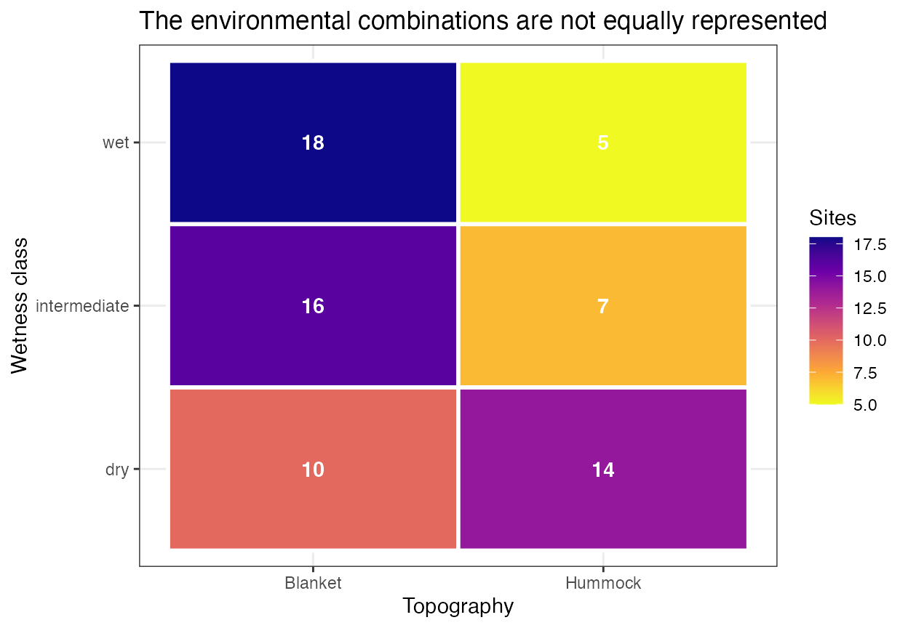
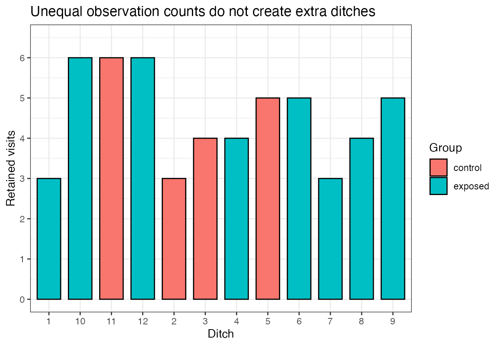

unbalanced-mixed.RmdEcological data are rarely perfectly balanced. Sites disappear, sampling dates are missed, habitat combinations occur at different frequencies, and some blocks cannot contain every treatment. Imbalance changes both the comparison being estimated and which observations may be exchanged under the null.
distmer distinguishes two common cases:
The formula remains familiar. The important work is identifying what was independently assigned or sampled.
The vegan::mite data contain 70 mite communities and
environmental measurements. Dividing water content into three broad
classes produces unequal representation across wetness and topographic
classes.
data(mite, mite.env, package = "vegan")
mite_env <- transform(
mite.env,
Wetness = cut(
WatrCont,
breaks = quantile(WatrCont, c(0, 1/3, 2/3, 1)),
include.lowest = TRUE,
labels = c("dry", "intermediate", "wet")
)
)
mite_env$Topo <- droplevels(mite_env$Topo)
mite_bray <- vegdist(mite, method = "bray")
cell_counts <- as.data.frame(table(mite_env$Wetness, mite_env$Topo))
names(cell_counts) <- c("Wetness", "Topography", "sites")
cell_counts |>
kbl(digits=3) |>
kable_styling(bootstrap_options = c("striped", "hover", "condensed")) | Wetness | Topography | sites |
|---|---|---|
| dry | Blanket | 10 |
| intermediate | Blanket | 16 |
| wet | Blanket | 18 |
| dry | Hummock | 14 |
| intermediate | Hummock | 7 |
| wet | Hummock | 5 |
ggplot(cell_counts, aes(Topography, Wetness, fill = sites)) +
geom_tile(colour = "white", linewidth = 1) +
geom_text(aes(label = sites), colour = "white", fontface = "bold") +
scale_fill_viridis_c(option = "C", direction = -1) +
theme_bw() +
labs(title = "The environmental combinations are not equally represented",
x = "Topography", y = "Wetness class", fill = "Sites")
For an additive ecological question, a Type II model compares each predictor after accounting for the other without making the result depend on formula order.
mite_fit <- permanova(
mite_bray ~ Wetness + Topo,
mite_env, type = "II", permutations = 999, seed = 17
)
mite_fit$table |>
kbl(digits=3) |>
kable_styling(bootstrap_options = c("striped", "hover", "condensed")) | Source | df | SS | MS | Pseudo-F | P(perm) | P(MC) | Unique perms |
|---|---|---|---|---|---|---|---|
| Wetness | 2 | 2.168 | 1.084 | 7.002 | 0.001 | 0 | 999 |
| Topo | 1 | 1.136 | 1.136 | 7.337 | 0.001 | 0 | 999 |
| Residual | 66 | 10.215 | 0.155 | NA | NA | NA | NA |
| Total | 69 | 14.696 | NA | NA | NA | NA | NA |
Use Type III only when an interaction is scientifically required and
the requested effects are estimable. Empty cells or aliased columns are
reported rather than converted into a different hypothesis. See
vignette("fixed-effects") for the meaning of all three
types.
vegan::pyrifos follows aquatic-invertebrate communities
in 12 experimental ditches over time. Dose was assigned to ditches, so
the ditch—not each date—is the independent treatment unit. To illustrate
missed visits, we retain between three and six dates per ditch, with
every replication size represented in both treatment groups.
data(pyrifos, package = "vegan")
ditch <- gl(12, 1, length = nrow(pyrifos))
dose_by_ditch <- c(0.1, 0, 0, 0.9, 0, 44, 6, 0.1, 44, 0.9, 0, 6)
treatment_by_ditch <- factor(
ifelse(dose_by_ditch == 0, "control", "exposed"),
levels = c("control", "exposed")
)
visits_to_keep <- c(3, 3, 4, 4, 5, 5, 3, 4, 5, 6, 6, 6)
visit <- ave(seq_len(nrow(pyrifos)), ditch, FUN = seq_along)
keep <- visit <= visits_to_keep[ditch]
pyrifos_env <- data.frame(
ditch = droplevels(ditch[keep]),
treatment = treatment_by_ditch[ditch[keep]]
)
pyrifos_bray <- vegdist(pyrifos[keep, ], method = "bray")
ditch_summary <- data.frame(
ditch = levels(pyrifos_env$ditch),
treatment = unname(tapply(
pyrifos_env$treatment, pyrifos_env$ditch,
function(x) as.character(x[1])
)),
visits = as.integer(table(pyrifos_env$ditch))
)
ditch_summary$treatment <- factor(
ditch_summary$treatment, levels = levels(treatment_by_ditch)
)
ggplot(ditch_summary, aes(ditch, visits, fill = treatment)) +
geom_col(color="black", width = 0.75) +
theme_bw() +
scale_y_continuous(breaks = 0:6, limits = c(0, 6.5)) +
labs(title = "Unequal observation counts do not create extra ditches",
x = "Ditch", y = "Retained visits", fill = "Group")
pyrifos_fit <- permanova(
pyrifos_bray ~ treatment + (1 | ditch),
pyrifos_env, permutations = 999, seed = 17
)
pyrifos_fit$table |>
kbl(digits=3) |>
kable_styling(bootstrap_options = c("striped", "hover", "condensed")) | Source | df | SS | MS | Pseudo-F | P(perm) | P(MC) | Unique perms |
|---|---|---|---|---|---|---|---|
| treatment | 1 | 0.055 | 0.055 | 1.42 | 0.121 | NA | 999 |
| Cluster-centroid Residual | 10 | 0.391 | 0.039 | NA | NA | NA | NA |
pyrifos_fit$fit$test[
c("estimand", "exchangeable_units", "permutation_strata")
] |>
kbl(digits=3) |>
kable_styling(bootstrap_options = c("striped", "hover", "condensed"))
|
|
|
The comparison gives every ditch centroid equal weight, regardless of whether that ditch contributed three or six dates. Under the null, whole-ditch residuals move only among ditches with the same retained visit count. Treating all dates as independent would overstate replication and answer the wrong question.
The replication-size restriction must still permit treatment to vary.
If, for example, every three-visit ditch were a control and every
six-visit ditch were exposed, sampling effort and treatment would be
confounded. distmer rejects that design because permutation
cannot separate their effects.
The same experimental-unit principle extends to several field layouts:
~ treatment + (1 | region/site) for unequal nested
hierarchies;~ treatment + (1 | block) + (1 | treatment:block) for
incomplete randomized blocks;(1 | region/site),
(1 | treatment:region), and
(1 | treatment:region:site) for crossed–nested
studies;For these models, complete units or treatment profiles move only within matching size or topology strata. Partly observed profiles, disconnected treatment incidence, zero denominators, and predictors confounded with strata are rejected. The random-effects guide explains the supported formula patterns and implementation choices in more detail.
Post-model contrasts must not fall back to observation-level
replication. For supported mixed designs,
permanova_mixed_contrasts() and
permanova_mixed_pairwise() use the same unit-centroid
estimand and restricted permutation structure as the overall model.
dose <- factor(rep(dose_by_ditch, 11)[keep])
contrast_env <- data.frame(ditch = pyrifos_env$ditch, dose = dose)
contrast_design <- compile_permanova_design(
~ dose + (1 | ditch), contrast_env, pyrifos_bray
)
dose_levels <- levels(dose)
positive_vs_control <- setNames(
ifelse(dose_levels == "0", -1, 1 / (length(dose_levels) - 1)),
dose_levels
)
permanova_mixed_contrasts(
contrast_design,
contrasts = list(`mean positive dose - control` = positive_vs_control),
permutations = 199, seed = 17
)$table |>
kbl(digits=3) |>
kable_styling(bootstrap_options = c("striped", "hover", "condensed")) | contrast | estimand | df | ss | denominator | denominator_df | pseudo_f | p_perm | p_adjusted | adjustment | |
|---|---|---|---|---|---|---|---|---|---|---|
| mean positive dose - control | mean positive dose - control | equally weighted random-intercept unit centroids | 1 | 0.055 | MS[unit-centroid Residual] | 7 | 1.565 | 0.145 | 0.145 | holm |
Unbalanced inference can be defensible, but it cannot recover a treatment comparison that the sampling design never observed.